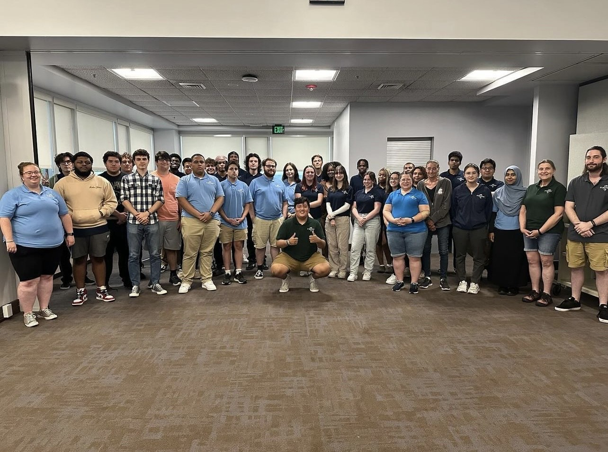
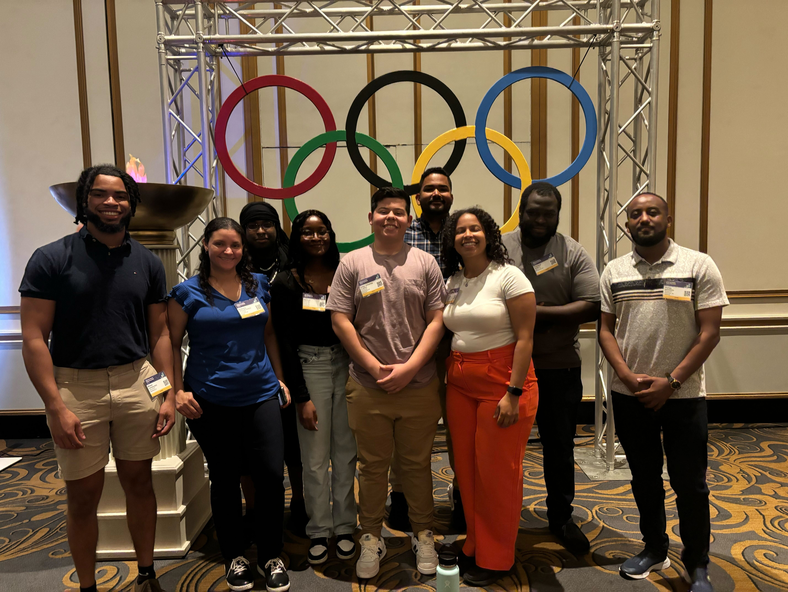
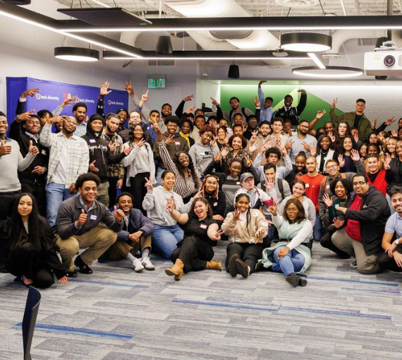

During my time at the University of Rhode Island, I gained valuable experience in two critical IT roles. As an IT Technician, I provided prompt and effective support for computing and networking issues, addressing user needs via phone, walk-in, and email. Transitioning to the Endpoint Support Member role, I focused on managing and maintaining computers through Azure and Active Directory, ensuring compliance with the university’s security policies and keeping all devices updated with the latest software. This experience honed my skills in both user support and IT infrastructure management.

As a Software Developer Intern at Liberty Mutual, I collaborate with cross-functional teams to design, develop, and implement software solutions according to project requirements. I also debug and resolve software defects to ensure high-quality deliverables for clients. This role has enabled me to further develop my technical skills and gain practical experience in a professional setting.

My experience with Hack Diversity has been incredibly enriching and transformative. Through the program, I’ve had the opportunity to develop a range of technical skills and gain invaluable industry insights. The resources and mentorship provided have been instrumental in my growth, enabling me to work on real-world projects and connect with professionals in the tech community. This support has not only enhanced my technical abilities but also broadened my perspective, equipping me with the tools and confidence needed to excel in my career.